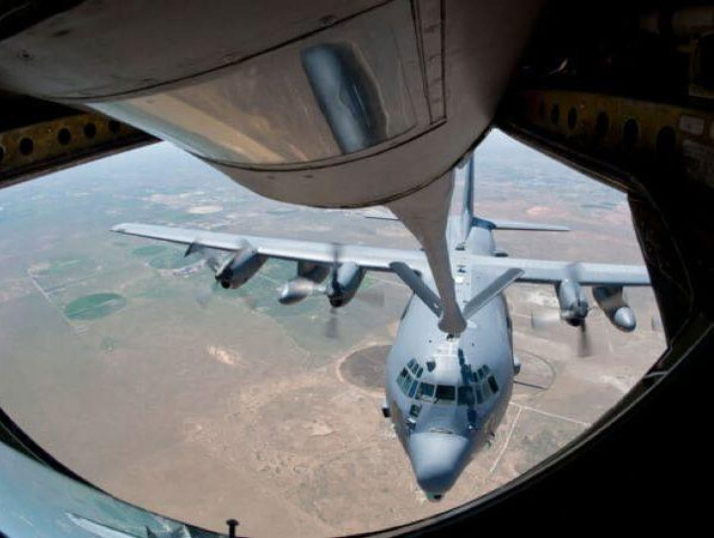
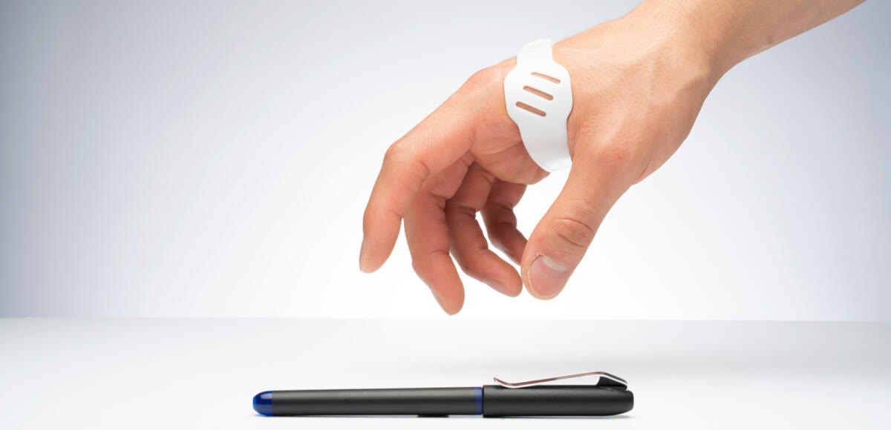

FX10
Graham Rahal Performance：手工 20–40 小時的治具，改成隔夜印好
超跑改裝 ・ 美國
師傅過去要花 20 到 40 小時切割、成形、焊接一組治具、支架或排氣零件；導入 FX10 後，CAD 畫好、隔夜印完、隔天就用。為 1,000 匹馬力的油電超跑 Lamborghini Revuelto 製作 X-pipe 排氣時，GRP 用 FX10 以 316L 不鏽鋼印出法蘭，表面可直接焊接，幾乎不需後加工。
20–40 小時 → 隔夜原廠案例（英文） →

數字取自 Markforged 原廠案例原文；機型照原文標示，並非每一案都是 FX10。
產線不停，治具就不能先倒下。超跑改裝廠、整車組裝線、跨國傳動系統供應商，三家都把治具改成自己印。
師傅過去要花 20 到 40 小時切割、成形、焊接一組治具、支架或排氣零件；導入 FX10 後，CAD 畫好、隔夜印完、隔天就用。為 1,000 匹馬力的油電超跑 Lamborghini Revuelto 製作 X-pipe 排氣時，GRP 用 FX10 以 316L 不鏽鋼印出法蘭，表面可直接焊接，幾乎不需後加工。

同一條線同時組裝多個車型，治具之間只差幾公釐。改用 Onyx GF 後，每個車型配一種顏色，作業員第一次伸手就拿對；保險桿 QR 追蹤標籤的定位治具，精度做到 0.1 mm。

全球傳動與動力系統供應商 Dana 在七個國家部署 Markforged 印表機。義大利 Rovereto 工程中心用 X7 印的複材治具，上線超過一年沒有故障，每件治具成本降 70%、交期縮短 90%。

七色 Onyx GF 讓治具一眼看出屬於哪條線、哪個版本、哪個危險區；Subaru 印第安納廠的色碼治具就是用它印的。橘色新上市 →
飛上去之前，每一件都要過關。一家取得澳洲民航核准，一家符合美國 FAA 要求，一家把量測搬進列印過程。

Plane Support 以 FX10 為核心建立航太積層製造實驗室，用具批次追溯的阻燃材料 Onyx FR-A 印 Bell 214B 機艙空調風管，取得澳洲民航安全局（CASA）核准，可用積層製造生產這項零件。合作夥伴 McDermott Aviation 擁有全球最大的 214B 機隊，主要投入山林火災空中滅火。

CMS 為私人與商務噴射機維修、升級與替換客艙管理和機上娛樂系統。2019 年成立後購入兩台 X7，以 UL 94 V-0 阻燃等級的 Onyx FR 印機上娛樂系統改裝件等最終使用零件，符合美國聯邦航空總署（FAA）要求。

以碳纖維強化複材零件取代鋁件，為直升機減重；並用 Markforged 的 Blacksmith 檢測軟體在列印過程中自動量測。原本每件人工量測要 30 到 45 分鐘，導入後平均每件省下約 30 分鐘。
補給線拉長時，做得出零件就是戰備。停產的艙蓋塞、訓練中撞壞的夜視鏡座、為握力不足的退伍軍人設計的握筆輔具，全都自己印出來。
協助駕駛夜間觀察的艙蓋塞已停產，重新製作約需 10,000 美元、交期 3 個月。部隊改用 Markforged 以 Onyx 印一件 230 美元，另以 17-4PH 不鏽鋼印出金屬版 800 美元；單這一項應用就省下 244,000 美元。

夜視鏡固定座在訓練中容易撞壞，買一個 100 美元到數百美元、還要等好幾週。中隊用 X7 印替換件並加上適配多種頭盔的墊片，每件不到 5 美元、幾小時完成；負責人表示強度與市售鋁件相當。

中維吉尼亞醫療體系的輔具團隊與職能治療師合作，為抓握力不足的退伍軍人與現役軍人設計腕帶式握筆輔具，以 Smooth TPU 95A 彈性材料列印，讓使用者能穩穩握住筆或觸控筆。

平時用連續碳纖維複材印治具與零件；換上 Metal Kit 金屬列印引擎，同一台印 316L、17-4PH 不鏽鋼與 H13 工具鋼，金屬件再經 Wash-1 清洗與 Sinter-2 燒結完成。列印頭上的雷射測微器邊印邊量，自動調平、自動換料，工程師與現場操作員都能上手。
同時要做複材與金屬零件？看 FX10 Sinter-2 Bundle →
寄一個零件圖檔，我們可以安排測試列印與 FX10 機台展示，並提供報價。來信請附產業、零件用途、預計材料與所在地區（台灣、中國、香港、越南）。